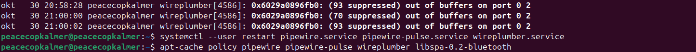

Bluetooth: heliteenuste taaskäivitus tõi heli tagasi
Sony WH-1000XM4 kõrvaklappidega kadus heli ka siis, kui Bluetooth-ühendus püsis. Varem andis Tanki ühenduse katkestamine ROG-is heli tagasi, kuid hiljem tekkis vaikus ka Tanki ühenduseta. Välja- ja sisselogimise järel töötas heli mõnda aega ning kadus uuesti.
Kontrollitud ajutine töövõte
- Ava mõjutatud arvuti kasutaja terminal.
- Käivita
systemctl --user restart pipewire.service pipewire-pulse.service wireplumber.service. - Proovi heli uuesti esitada. Selle katse järel kinnitas kasutaja: „nüüd on heli”.
Logis kordus WirePlumberi out of buffers. See on veaotsingu leid, mitte tõendatud algpõhjus. Pildil on ka tegelikult käivitatud taastamiskäsk.
Seis: ajutiselt taastatud. Püsiparandust ei kinnitatud. Ainult WirePlumberi taaskäivitamine oli järgmise eristuskatse soovitus, mitte kinnitatud lahendus.
